This class's assignment was about mounting and using a motor in your project. As soon as I saw these motorized potentiometers from Sparkfun I knew I had this idea for an audio system that, if left alone, would always turn the music all the way up. It was like 2001 A Space Odyssey except HAL is a computer that really wants the music to be loud.
To start, I bought a bamboo utensil organizer from The Container Store. After talking with my Pcomp partner, we decided this idea could be our Pcomp midterm, and instead of a computer the musix box could be haunted by a ghost. With this idea in mind, I prototyped a control panel for the box.
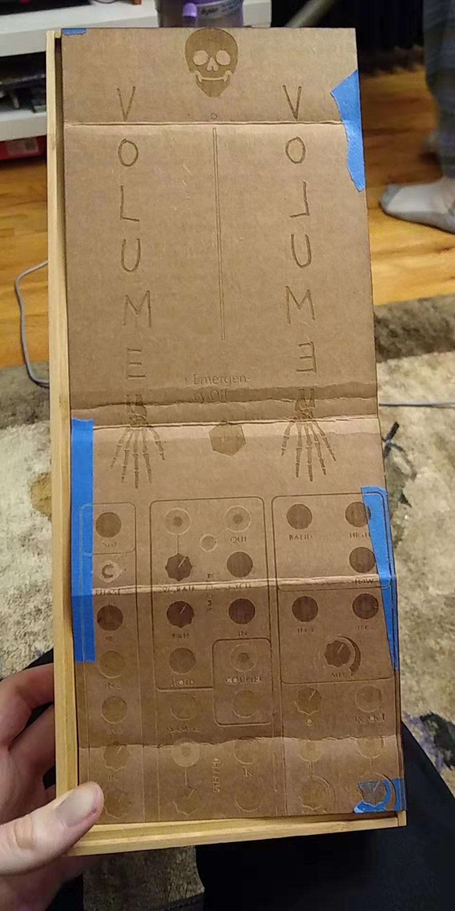It looks a little wonky because the laser cutter at the MakerSpace works a little differently than the one at ITP, but the idea was sound. So, I went ahead and tried to implement this in acrylic.
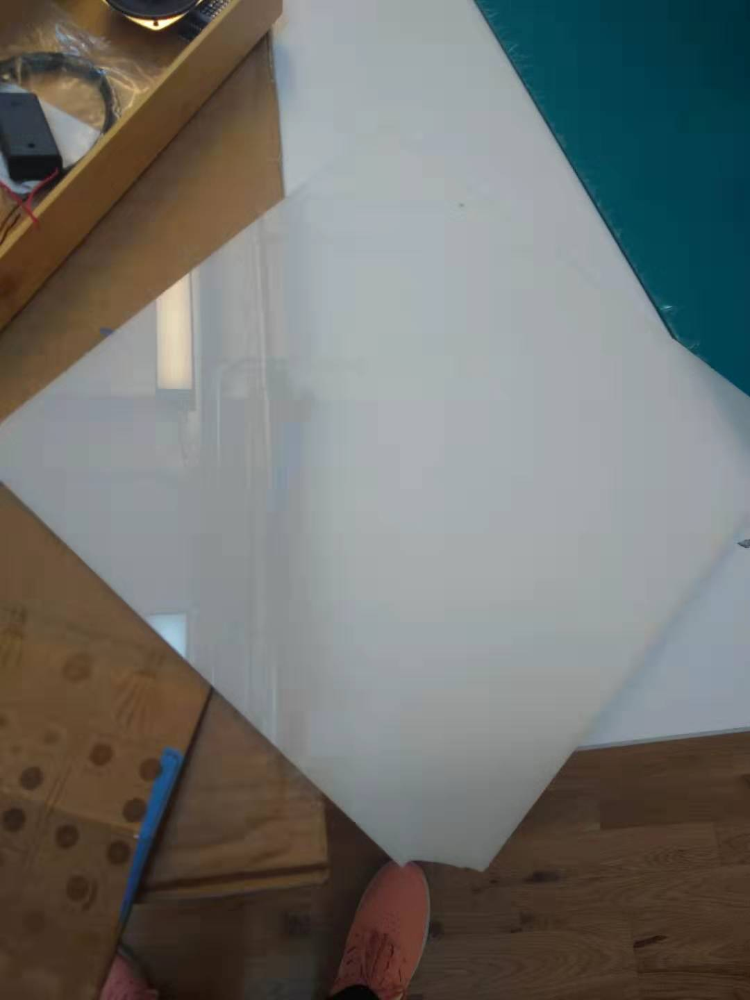 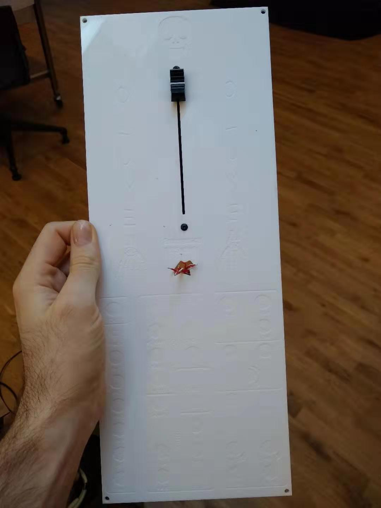 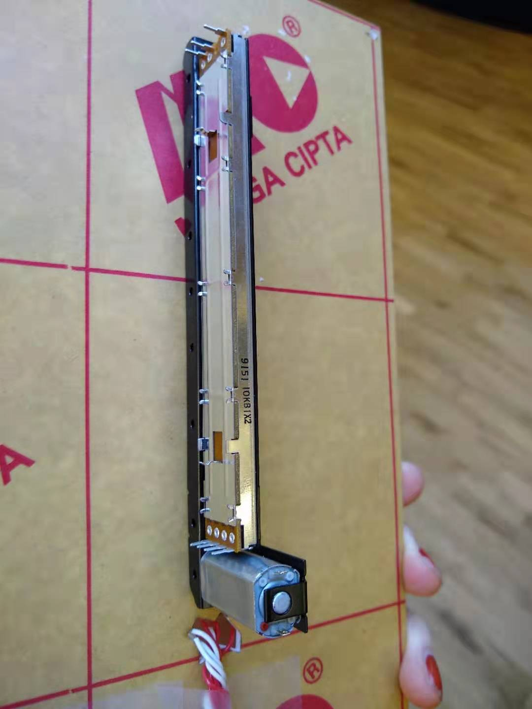 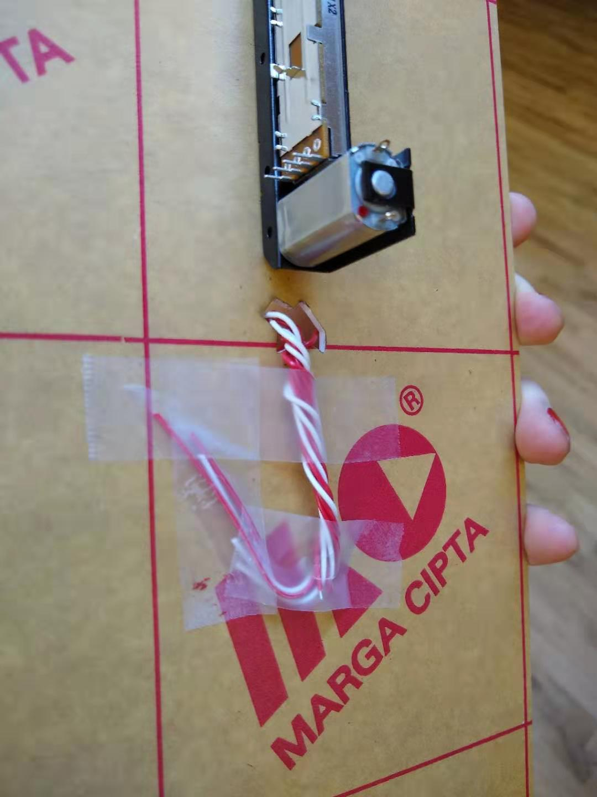 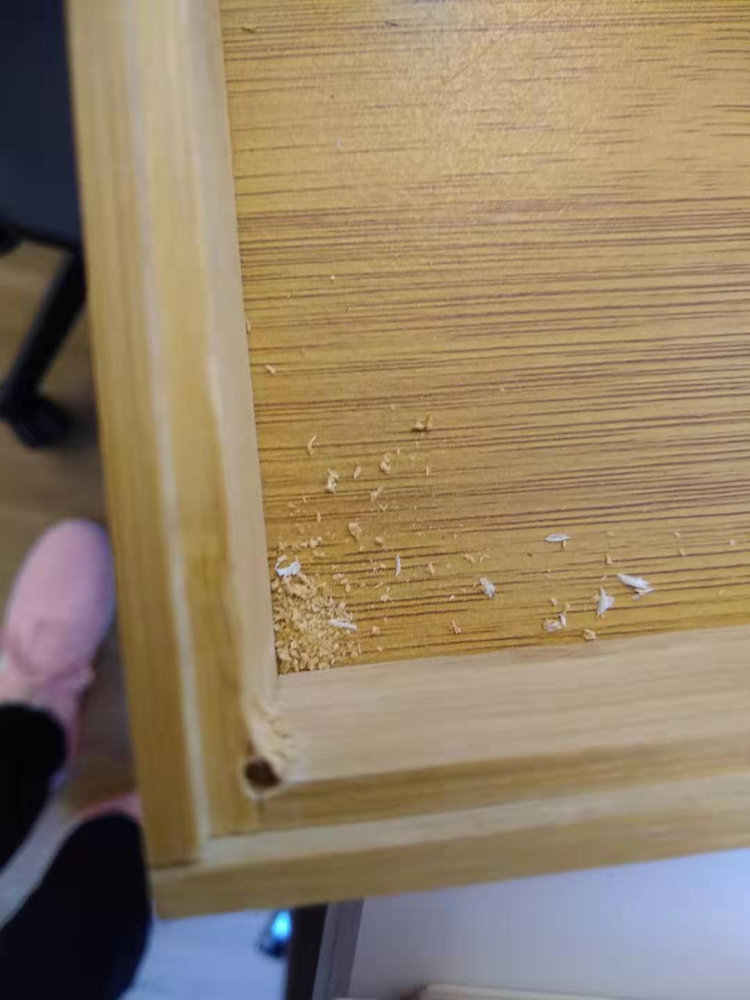 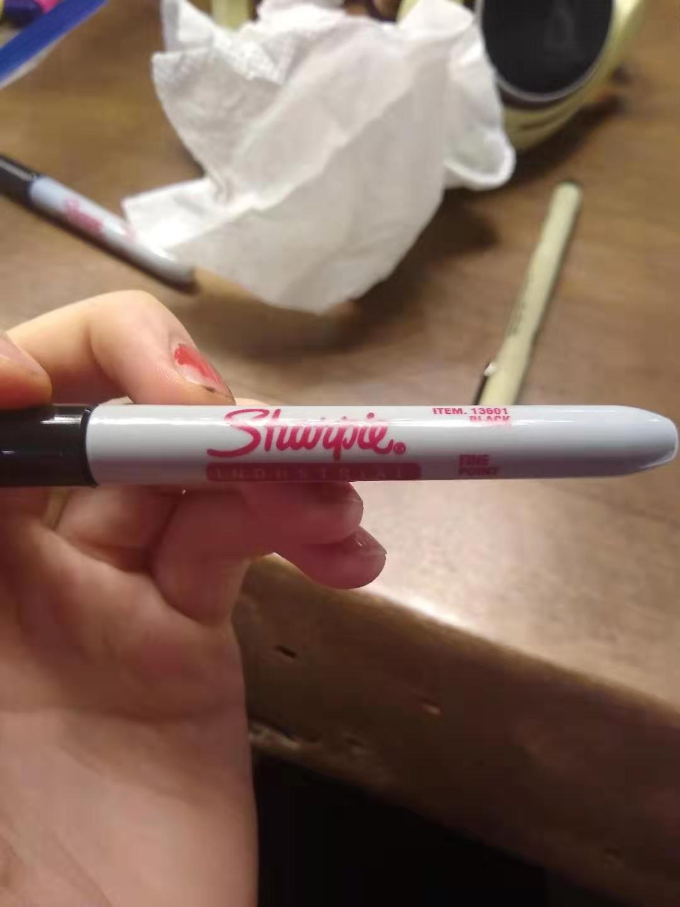 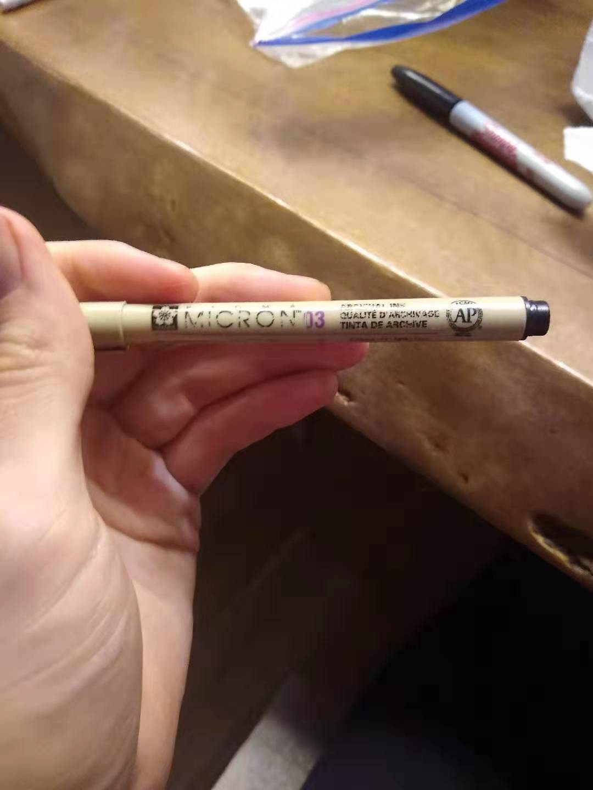 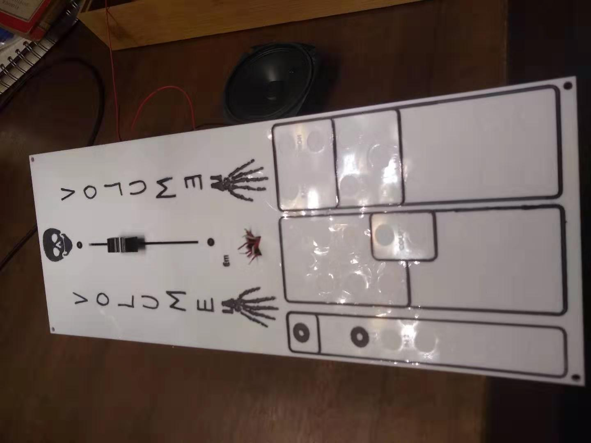 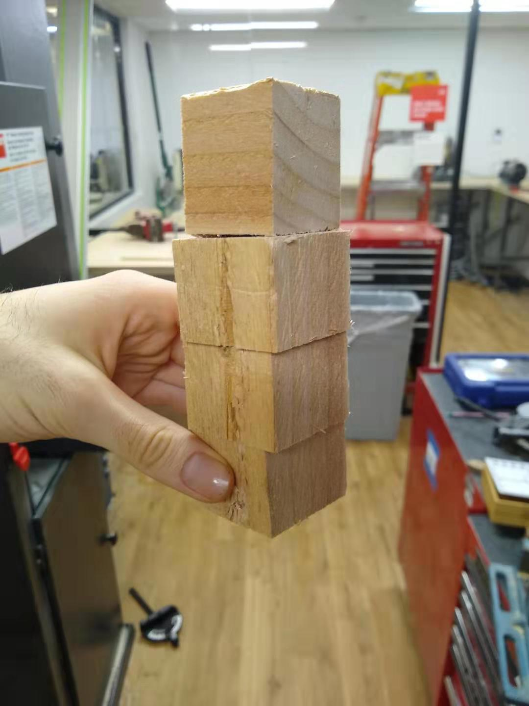 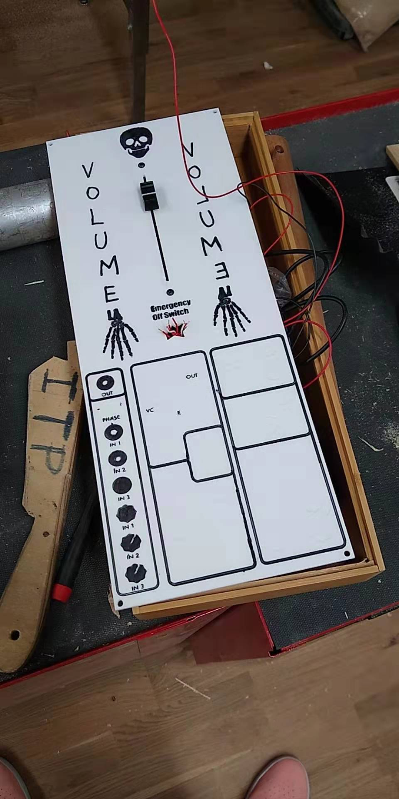 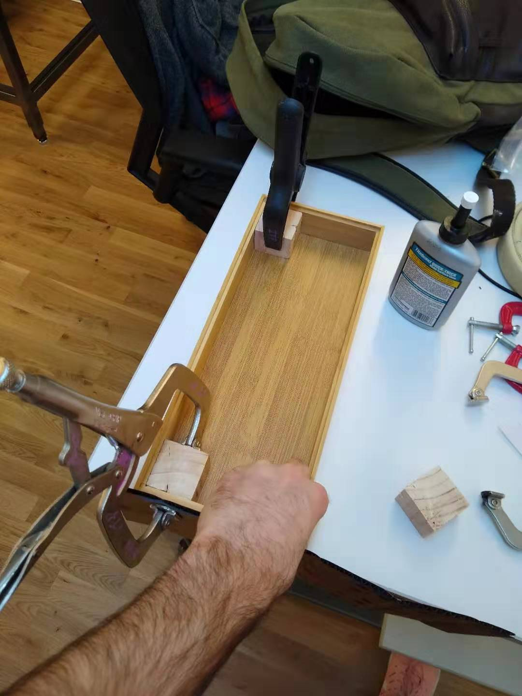 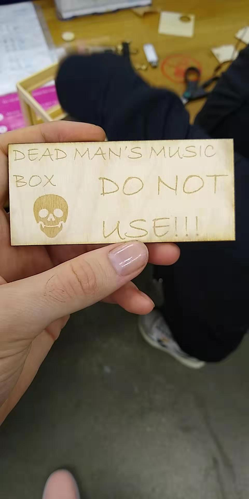 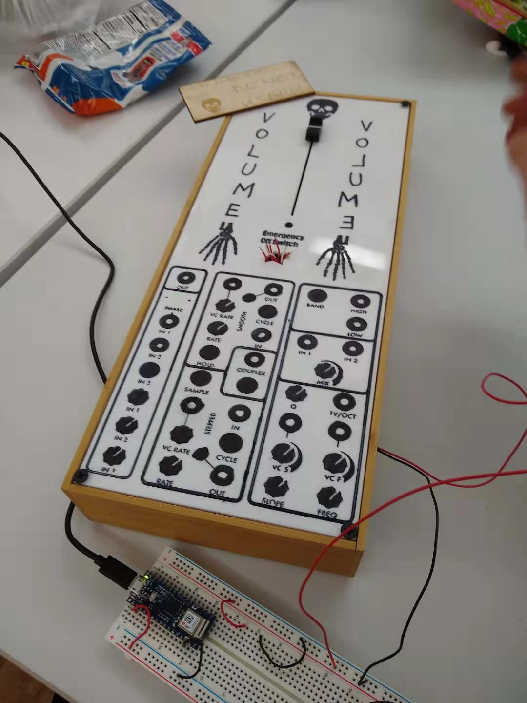 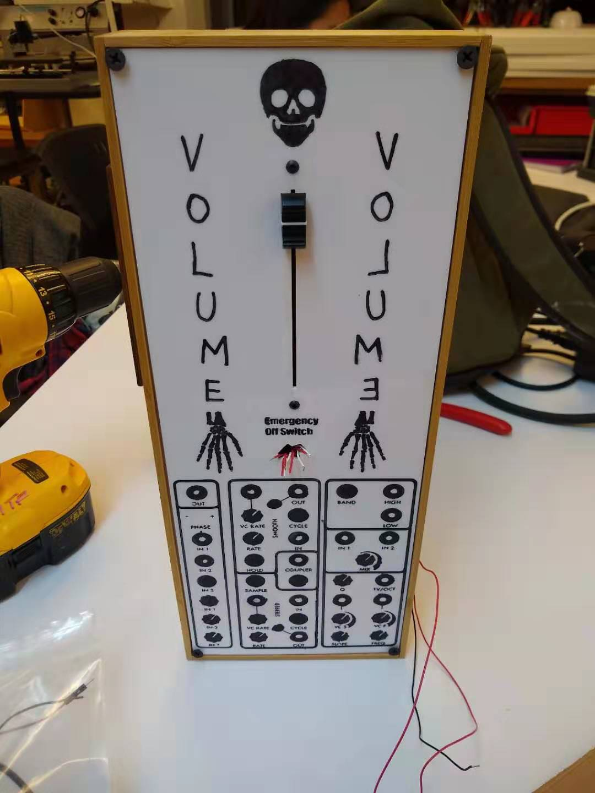 Comments? Questions? Concerns? Email me here!